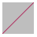
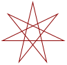
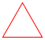
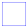
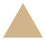
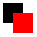
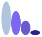

WeScheme
WeScheme is a web-based programming environment that allows us to write, run, and share programs on the web. Programs written in WeScheme should be available from any computer with a capable JavaScript-enabled web browser. The editing environment, the compiler, and the associated runtime libraries are all hosted on WeScheme, eliminating installation hassles. WeScheme allows us to easily share programs by creating share URLs; these share URLs can be used to run a program or, if the author permits it, allow anyone to view the source to that program.
Web programs are typically interactive, so WeScheme provides special support for World programs that can interact with timer ticks, keyboard events, and images.
1 Example programs
Here are a few example programs that can give an idea of the kinds of things you can do in WeScheme. You can:
2 The environment
Let’s jump in and explore WeScheme by running a few programs.
Open up a web browser to http://www.wescheme.org. Press the Start Coding button. The following editor page should be divided into a top definitions section, and a bottom interactions section. Click onto the definitions top half of the window and enter in the following text, quotes and all:
"hello world"
Next, press the Run button at the toolbar at the top. If all goes well, we should see a "hello world" appear on the bottom window.
Next, add another line in the definitions window:
(bitmap/url "http://racket-lang.org/logo.png")
Press the Run button again. We should now see an image in the Interactions window as well.
(rotate 45 (bitmap/url "http://racket-lang.org/logo.png"))
(overlay (bitmap/url "http://racket-lang.org/logo.png") (bitmap/url "http://www.wescheme.org/css/images/BigLogo.png"))
3 World programming and Images API
procedure
(big-bang w h ...) → world
w : world h : big-bang-handler
procedure
(on-tick tick-f delay) → big-bang-handler
tick-f : ([w world] -> world) delay : real (on-tick tick-f) → big-bang-handler tick-f : ([w world] -> world)
;; The world is a number ;; tick: world -> world (define (tick world) (add1 world)) (big-bang 0 (on-tick tick 2)) ;; tick every two seconds
procedure
(on-key key-f) → big-bang-handler
key-f : ([w world] [k key] -> world)
;; The world is a number. ;; handle-key: world key -> image (define (handle-key w k) (cond [(key=? k "up") (add1 w)] [(key=? k "down") (sub1 w)] [else w])) (big-bang 0 (on-key handle-key))
procedure
(to-draw draw-f) → big-bang-handler
draw-f : ([w world] -> image)
;; The world is a number. ;; draw: world -> image (define (draw world) (circle world "solid" "blue")) (big-bang 20 (to-draw draw))
procedure
(stop-when stop?) → big-bang-handler
stop? : ([w world] -> boolean)
;; the world is a number ;; stop?: world -> boolean (define (stop? world) (> world 10)) (big-bang 0 (stop-when stop?) (on-tick add1 1))
Here is a listing of the functions you can use to make images.
struct
(struct color (red green blue alpha) #:extra-constructor-name make-color) red : (integer-in 0 255) green : (integer-in 0 255) blue : (integer-in 0 255) alpha : (integer-in 0 255)
The red, green, and blue fields combine to make a color, with the higher values meaning more of the given color. For example, (make-color 255 0 0) makes a bright red color and (make-color 255 0 255) makes a bright purple.
The alpha field controls the transparency of the color. A value of 255 means that the color is opaque and 0 means the color is fully transparent.
The constructor, make-color, also accepts only three arguments, in which case the three arguments are used for the red, green, and blue fields, and the alpha field defaults to 255.
procedure
(empty-scene width height) → image?
width : (and/c real? (not/c negative?)) height : (and/c real? (not/c negative?)) (empty-scene width height color) → image? width : (and/c real? (not/c negative?)) height : (and/c real? (not/c negative?)) color : image-color?
> (empty-scene 160 90)
The three-argument version creates a rectangle of the specified color with a black outline.
procedure
(scene+line scene x1 y1 x2 y2 color) → image?
scene : image? x1 : real? y1 : real? x2 : real? y2 : real? color : image-color?
> (scene+line (ellipse 40 40 "outline" "maroon") 0 40 40 0 "maroon")
> (scene+line (rectangle 40 40 "solid" "gray") -10 50 50 -10 "maroon") 
procedure
(place-image/align image x y x-place y-place scene) → image? image : image? x : real? y : real? x-place : x-place? y-place : y-place? scene : image?
> (place-image/align (triangle 48 "solid" "yellowgreen") 64 64 "right" "bottom" (rectangle 64 64 "solid" "mediumgoldenrod"))
> (beside (place-image/align (circle 8 "solid" "tomato") 0 0 "center" "center" (rectangle 32 32 "outline" "black")) (place-image/align (circle 8 "solid" "tomato") 8 8 "center" "center" (rectangle 32 32 "outline" "black")) (place-image/align (circle 8 "solid" "tomato") 16 16 "center" "center" (rectangle 32 32 "outline" "black")) (place-image/align (circle 8 "solid" "tomato") 24 24 "center" "center" (rectangle 32 32 "outline" "black")) (place-image/align (circle 8 "solid" "tomato") 32 32 "center" "center" (rectangle 32 32 "outline" "black")))
procedure
radius : (and/c real? (not/c negative?)) mode : mode? color : image-color? (circle radius outline-mode color) → image? radius : (and/c real? (not/c negative?)) outline-mode : (or/c 'outline "outline") color : image-color?
procedure
side-length : (and/c real? (not/c negative?)) mode : mode? color : image-color? (star side-length outline-mode color) → image? side-length : (and/c real? (not/c negative?)) outline-mode : (or/c 'outline "outline") color : image-color?
> (star 40 "solid" "gray")
procedure
(radial-star point-count inner-radius outer-radius mode color) → image? point-count : (and/c integer? (>=/c 2)) inner-radius : (and/c real? (not/c negative?)) outer-radius : (and/c real? (not/c negative?)) mode : mode? color : image-color?
(radial-star point-count inner-radius outer-radius outline-mode color) → image? point-count : (and/c integer? (>=/c 2)) inner-radius : (and/c real? (not/c negative?)) outer-radius : (and/c real? (not/c negative?)) outline-mode : (or/c 'outline "outline") color : image-color?
> (radial-star 8 8 64 "solid" "darkslategray") > (radial-star 32 30 40 "outline" "black")
procedure
(star-polygon side-length side-count step-count mode color) → image? side-length : (and/c real? (not/c negative?)) side-count : side-count? step-count : step-count? mode : mode? color : image-color?
(star-polygon side-length side-count step-count outline-mode color) → image? side-length : (and/c real? (not/c negative?)) side-count : side-count? step-count : step-count? outline-mode : (or/c 'outline "outline") color : image-color?
For example, if side-count is 5 and step-count is 2, then this function produces a shape just like star.
> (star-polygon 40 5 2 "solid" "seagreen") > (star-polygon 40 7 3 "outline" "darkred") 
> (star-polygon 20 10 3 "solid" "cornflowerblue")
procedure
vertices : (listof (or/c real-valued-posn? pulled-point?)) mode : mode? color : image-color? (polygon vertices outline-mode color) → image? vertices : (listof (or/c real-valued-posn? pulled-point?)) outline-mode : (or/c 'outline "outline") color : image-color?
> (polygon (list (make-posn 0 0) (make-posn -10 20) (make-posn 60 0) (make-posn -10 -20)) "solid" "burlywood")
> (polygon (list (make-pulled-point 1/2 20 0 0 1/2 -20) (make-posn -10 20) (make-pulled-point 1/2 -20 60 0 1/2 20) (make-posn -10 -20)) "solid" "burlywood")
> (polygon (list (make-posn 0 0) (make-posn 0 40) (make-posn 20 40) (make-posn 20 60) (make-posn 40 60) (make-posn 40 20) (make-posn 20 20) (make-posn 20 0)) "solid" "plum")
Changed in version 1.3 of package htdp-lib: Accepts pulled-points.
procedure
width : (and/c real? (not/c negative?)) height : (and/c real? (not/c negative?)) mode : mode? color : image-color?
(rectangle width height outline-mode color) → image? width : (and/c real? (not/c negative?)) height : (and/c real? (not/c negative?)) outline-mode : (or/c 'outline "outline") color : image-color?
procedure
(regular-polygon side-length side-count mode color) → image? side-length : (and/c real? (not/c negative?)) side-count : side-count? mode : mode? color : image-color?
(regular-polygon side-length side-count outline-mode color) → image? side-length : (and/c real? (not/c negative?)) side-count : side-count? outline-mode : (or/c 'outline "outline") color : image-color?
> (regular-polygon 50 3 "outline" "red") 
> (regular-polygon 40 4 "outline" "blue") 
> (regular-polygon 20 8 "solid" "red")
procedure
side-length : (and/c real? (not/c negative?)) angle : angle? mode : mode? color : image-color?
(rhombus side-length angle outline-mode color) → image? side-length : (and/c real? (not/c negative?)) angle : angle? outline-mode : (or/c 'outline "outline") color : image-color?
procedure
side-len : (and/c real? (not/c negative?)) mode : mode? color : image-color? (square side-len outline-mode color) → image? side-len : (and/c real? (not/c negative?)) outline-mode : (or/c 'outline "outline") color : image-color?
procedure
side-length : (and/c real? (not/c negative?)) mode : mode? color : image-color?
(triangle side-length outline-mode color) → image? side-length : (and/c real? (not/c negative?)) outline-mode : (or/c 'outline "outline") color : image-color?
> (triangle 40 "solid" "tan") 
procedure
(right-triangle side-length1 side-length2 mode color) → image? side-length1 : (and/c real? (not/c negative?)) side-length2 : (and/c real? (not/c negative?)) mode : mode? color : image-color?
(right-triangle side-length1 side-length2 outline-mode color) → image? side-length1 : (and/c real? (not/c negative?)) side-length2 : (and/c real? (not/c negative?)) outline-mode : (or/c 'outline "outline") color : image-color?
> (right-triangle 36 48 "solid" "black")
procedure
(isosceles-triangle side-length angle mode color) → image? side-length : (and/c real? (not/c negative?)) angle : angle? mode : mode? color : image-color?
(isosceles-triangle side-length angle outline-mode color) → image? side-length : (and/c real? (not/c negative?)) angle : angle? outline-mode : (or/c 'outline "outline") color : image-color?
> (isosceles-triangle 200 170 "solid" "seagreen") > (isosceles-triangle 60 30 "solid" "aquamarine")
> (isosceles-triangle 60 330 "solid" "lightseagreen")

triangle/sss, if all three sides are known
triangle/ass, triangle/sas, or triangle/ssa, if two sides and their included angle are known
triangle/aas, triangle/asa, or triangle/saa, if two angles and their shared side are known.
They all construct a triangle oriented as follows:

procedure
width : (and/c real? (not/c negative?)) height : (and/c real? (not/c negative?)) mode : mode? color : image-color?

procedure
x1 : real? y1 : real? color : image-color?
> (overlay (rectangle 30 60 "solid" "orange") (ellipse 60 30 "solid" "purple"))
> (overlay (ellipse 10 10 "solid" "red") (ellipse 20 20 "solid" "black") (ellipse 30 30 "solid" "red") (ellipse 40 40 "solid" "black") (ellipse 50 50 "solid" "red") (ellipse 60 60 "solid" "black"))
> (overlay (regular-polygon 20 5 "solid" (make-color 50 50 255)) (regular-polygon 26 5 "solid" (make-color 100 100 255)) (regular-polygon 32 5 "solid" (make-color 150 150 255)) (regular-polygon 38 5 "solid" (make-color 200 200 255)) (regular-polygon 44 5 "solid" (make-color 250 250 255)))

This is the same as (underlay/xy i2 (- x) (- y) i1).
See also overlay/offset and underlay/offset.
> (overlay/xy (rectangle 20 20 "outline" "black") 20 0 (rectangle 20 20 "outline" "black"))
> (overlay/xy (rectangle 20 20 "solid" "red") 10 10 (rectangle 20 20 "solid" "black"))
> (overlay/xy (rectangle 20 20 "solid" "red") -10 -10 (rectangle 20 20 "solid" "black")) 
> (overlay/xy (overlay/xy (ellipse 40 40 "outline" "black") 10 15 (ellipse 10 10 "solid" "forestgreen")) 20 15 (ellipse 10 10 "solid" "forestgreen"))
procedure
(overlay/align x-place y-place i1 i2 is ...) → image?
x-place : x-place? y-place : y-place? i1 : image? i2 : image? is : image?
> (overlay/align "left" "middle" (rectangle 30 60 "solid" "orange") (ellipse 60 30 "solid" "purple"))
> (overlay/align "right" "bottom" (rectangle 20 20 "solid" "silver") (rectangle 30 30 "solid" "seagreen") (rectangle 40 40 "solid" "silver") (rectangle 50 50 "solid" "seagreen"))

It behaves like overlay, but with the arguments in the reverse order. That is, the first argument goes underneath of the second argument, which goes underneath the third argument, etc. The images are all lined up on their centers.
> (underlay (rectangle 30 60 "solid" "orange") (ellipse 60 30 "solid" "purple"))
> (underlay (ellipse 10 60 "solid" "red") (ellipse 20 50 "solid" "black") (ellipse 30 40 "solid" "red") (ellipse 40 30 "solid" "black") (ellipse 50 20 "solid" "red") (ellipse 60 10 "solid" "black"))
> (underlay (ellipse 10 60 40 "red") (ellipse 20 50 40 "red") (ellipse 30 40 40 "red") (ellipse 40 30 40 "red") (ellipse 50 20 40 "red") (ellipse 60 10 40 "red"))
This is the same as (overlay/xy i2 (- x) (- y) i1).
See also underlay/offset and overlay/offset.
> (underlay/xy (rectangle 20 20 "outline" "black") 20 0 (rectangle 20 20 "outline" "black"))
> (underlay/xy (rectangle 20 20 "solid" "red") 10 10 (rectangle 20 20 "solid" "black"))
> (underlay/xy (rectangle 20 20 "solid" "red") -10 -10 (rectangle 20 20 "solid" "black"))
> (underlay/xy (underlay/xy (ellipse 40 40 "solid" "gray") 10 15 (ellipse 10 10 "solid" "forestgreen")) 20 15 (ellipse 10 10 "solid" "forestgreen"))
procedure
(underlay/align x-place y-place i1 i2 is ...) → image?
x-place : x-place? y-place : y-place? i1 : image? i2 : image? is : image?
> (underlay/align "left" "middle" (rectangle 30 60 "solid" "orange") (ellipse 60 30 "solid" "purple"))
> (underlay/align "right" "top" (rectangle 50 50 "solid" "seagreen") (rectangle 40 40 "solid" "silver") (rectangle 30 30 "solid" "seagreen") (rectangle 20 20 "solid" "silver"))
> (underlay/align "left" "middle" (rectangle 50 50 50 "seagreen") (rectangle 40 40 50 "seagreen") (rectangle 30 30 50 "seagreen") (rectangle 20 20 50 "seagreen"))
procedure
(beside/align y-place i1 i2 is ...) → image?
y-place : y-place? i1 : image? i2 : image? is : image?
> (beside/align "bottom" (ellipse 20 70 "solid" "lightsteelblue") (ellipse 20 50 "solid" "mediumslateblue") (ellipse 20 30 "solid" "slateblue") (ellipse 20 10 "solid" "navy")) 
> (beside/align "top" (ellipse 20 70 "solid" "mediumorchid") (ellipse 20 50 "solid" "darkorchid") (ellipse 20 30 "solid" "purple") (ellipse 20 10 "solid" "indigo"))
> (beside/align "baseline" (text "ijy" 18 "black") (text "ijy" 24 "black"))
procedure
(above/align x-place i1 i2 is ...) → image?
x-place : x-place? i1 : image? i2 : image? is : image?
> (above/align "right" (ellipse 70 20 "solid" "gold") (ellipse 50 20 "solid" "goldenrod") (ellipse 30 20 "solid" "darkgoldenrod") (ellipse 10 20 "solid" "sienna"))
> (above/align "left" (ellipse 70 20 "solid" "yellowgreen") (ellipse 50 20 "solid" "olivedrab") (ellipse 30 20 "solid" "darkolivegreen") (ellipse 10 20 "solid" "darkgreen"))
> (rotate 45 (ellipse 60 20 "solid" "olivedrab")) > (rotate 5 (rectangle 50 50 "outline" "black"))
> (rotate 45 (beside/align "center" (rectangle 40 20 "solid" "darkseagreen") (rectangle 20 100 "solid" "darkseagreen")))
See also Rotating and Image Centers.
The pen sizes are also scaled and thus draw thicker (or thinner) lines than the original image, unless the pen was size 0. That pen size is treated specially to mean “the smallest available line” and thus it always draws a one-pixel wide line; this is also the case for 'outline and "outline" shapes that are drawn with an image-color? instead of a pen.
procedure
x : real? y : real? width : (and/c real? (not/c negative?)) height : (and/c real? (not/c negative?)) image : image?
> (crop 0 0 40 40 (circle 40 "solid" "chocolate")) > (crop 40 60 40 60 (ellipse 80 120 "solid" "dodgerblue"))
> (above (beside (crop 40 40 40 40 (circle 40 "solid" "palevioletred")) (crop 0 40 40 40 (circle 40 "solid" "lightcoral"))) (beside (crop 40 0 40 40 (circle 40 "solid" "lightcoral")) (crop 0 0 40 40 (circle 40 "solid" "palevioletred"))))
Generally speaking, this function is useful to debug image constructions, i.e., to see where certain sub-images appear within some larger image.
procedure
(flip-horizontal image) → image?
image : image?
Flipping images with text is not supported (so passing flip-horizontal an image that contains a text or text/font image inside somewhere signals an error).
procedure
(flip-vertical image) → image?
image : image?
Flipping images with text is not supported (so passing flip-vertical an image that contains a text or text/font image inside somewhere signals an error).
> (above (star 40 "solid" "firebrick") (scale/xy 1 1/2 (flip-vertical (star 40 "solid" "gray"))))
procedure
string : string? font-size : (and/c integer? (<=/c 1 255)) color : image-color?
If the string contains newlines, the result image will have multiple lines.
> (text "Hello and\nGoodbye" 24 "orange")
> (image-height (text "Hello" 24 "olive")) 25
Changed in version 1.7 of package htdp-lib: When called with strings that have newlines, text returns multiple-line images.
procedure
(text/font string font-size color face family style weight underline?) → image? string : string? font-size : (and/c integer? (<=/c 1 255)) color : image-color? face : (or/c string? false)
family :
(or/c "default" "decorative" "roman" "script" "swiss" "modern" "symbol" "system" 'default 'decorative 'roman 'script 'swiss 'modern 'symbol 'system)
style :
(or/c "normal" "italic" "slant" 'normal 'italic 'slant)
weight :
(or/c "normal" "bold" "light" 'normal 'bold 'light) underline? : any/c
The face and the family combine to give the complete typeface. If face is available on the system, it is used, but if not then a default typeface based on the family is chosen. The style controls if the face is italic or not (on Windows and Mac OS, 'slant and 'italic are the same), the weight controls if it is boldface (or light), and underline? determines if the face is underlined. For more details on these arguments, see font%, which ultimately is what this code uses to draw the font.
procedure
(bitmap/url url) → image?
url : string?
Downloading the image happens each time this function is called, so you may find it simpler to download the image once with a browser and then paste it into your program or download it and use bitmap.
Additionally, images inserted into a DrRacket window are treated as bitmap images, as are instances of image-snip% and bitmap%.
> (image-width (ellipse 30 40 "solid" "orange")) 30
> (image-width (circle 30 "solid" "orange")) 60
> (image-width (beside (circle 20 "solid" "orange") (circle 20 "solid" "purple"))) 80
> (image-width (rectangle 0 10 "solid" "purple")) 0
> (image-height (ellipse 30 40 "solid" "orange")) 40
> (image-height (circle 30 "solid" "orange")) 60
> (image-height (overlay (circle 20 "solid" "orange") (circle 30 "solid" "purple"))) 60
> (image-height (rectangle 10 0 "solid" "purple")) 0
procedure
(image->color-list image) → (listof color?)
image : image?
The list of colors is obtained by drawing the image on a white background and then reading off the colors of the pixels that were drawn.
> (image->color-list (rectangle 2 2 "solid" "black")) (list (color 0 0 0 255) (color 0 0 0 255) (color 0 0 0 255) (color 0 0 0 255))
> (image->color-list (above (beside (rectangle 1 1 "solid" (make-color 1 1 1)) (rectangle 1 1 "solid" (make-color 2 2 2))) (beside (rectangle 1 1 "solid" (make-color 3 3 3)) (rectangle 1 1 "solid" (make-color 4 4 4))))) (list (color 1 1 1 255) (color 2 2 2 255) (color 3 3 3 255) (color 4 4 4 255))
procedure
(color-list->image l width height x y) → image?
l : List-of-color width : natural-number/c height : natural-number/c x : natural-number/c y : natural-number/c
The remaining functions provide alpha-channel information as well. Alpha channels are a measure of transparency; 0 indicates fully opaque and 255 indicates fully transparent.
Unless the image was constructed with text, text/font or, in some cases, crop, this will be the same as its height.
> (image-baseline (text "Hello" 24 "black")) 18
> (image-height (text "Hello" 24 "black")) 25
> (image-baseline (rectangle 100 100 "solid" "black")) 100
> (image-height (rectangle 100 100 "solid" "black")) 100
A cropped image’s baseline is the same as the image’s baseline, if the cropping stays within the original image’s bounding box. But if the cropping actually enlarges the image, then the baseline can end up being smaller.
> (image-height (rectangle 20 20 "solid" "black")) 20
> (image-baseline (rectangle 20 20 "solid" "black")) 20
> (image-height (crop 10 10 5 5 (rectangle 20 20 "solid" "black"))) 5
> (image-baseline (crop 10 10 5 5 (rectangle 20 20 "solid" "black"))) 5
> (image-height (crop 10 10 30 30 (rectangle 20 20 "solid" "black"))) 30
> (image-baseline (crop 10 10 30 30 (rectangle 20 20 "solid" "black"))) 20
It can be one of 'solid, "solid", 'outline, or "outline", indicating if the shape is filled in or not.
It can also be an integer between 0 and 255 (inclusive) indicating the transparency of the image. The integer 255 is fully opaque, and is the same as "solid" (or 'solid). The integer 0 means fully transparent.
procedure
(image-color? x) → boolean?
x : any/c
For example, "magenta", "black", 'orange, and 'purple are allowed. Colors are not case-sensitive, so "Magenta", "Black", 'Orange, and 'Purple are also allowed, and are the same colors as in the previous sentence. Additionally, spaces are not considered, so "light orange" is the same color as "lightorange".
| Light Brown | |
| Medium Brown | |
| Dark Brown | |
| Medium Cyan | |
| Light Goldenrod | |
| Medium Gray | |
| Medium Green | |
| Light Orange | |
| Medium Orange | |
| Medium Pink | |
| Dark Pink | |
| Light Purple | |
| Dark Purple | |
| Light Red | |
| Medium Red | |
| Light Turquoise | |
| Medium Yellow | |
| Dark Yellow |
Using "pinhole" or 'pinhole is only allowed when all of the image arguments have pinholes.
Using "pinhole" or 'pinhole is only allowed when all of the image arguments have pinholes.
See also image-baseline for more discussion of baselines.
Angles are in degrees, so 0 is the same as 360, 90 means rotating one quarter of the way around a circle, and 180 is halfway around a circle.
procedure
(side-count? x) → boolean?
x : any/c
procedure
(step-count? x) → boolean?
x : any/c
4 Basic operations
syntax
(check-expect expression expected-expression)
(check-expect (fahrenheit->celsius 212) 100) (check-expect (fahrenheit->celsius -40) -40) (define (fahrenheit->celsius f) (* 5/9 (- f 32)))
(EXAMPLE (+ 1 2) 3)
procedure
(* x ...) → number
x : number
> (* 5 3) 15
> (* 5 3 2) 30
> (* 2) 2
> (*) 1
procedure
(+ x ...) → number
x : number
> (+ 2/3 1/16) 35/48
> (+ 3 2 5 8) 18
> (+ 1) 1
> (+) 0
procedure
(- x y ...) → number
x : number y : number
> (- 5) -5
> (- 5 3) 2
> (- 5 3 1) 1
procedure
(/ x y ...) → number
x : number y : number
> (/ 12 2) 6
> (/ 12 2 3) 2
> (/ 3) 1/3
procedure
(< x y z ...) → boolean?
x : real y : real z : real
> (< 42 2/5) false
procedure
(<= x y z ...) → boolean?
x : real y : real z : real
> (<= 42 2/5) false
procedure
(= x ...) → number
x : number
procedure
(=~ x y eps) → boolean?
x : number y : number eps : non-negative-real
> (=~ 1.01 1.0 0.1) true
> (=~ 1.01 1.5 0.1) false
procedure
(> x y z ...) → boolean?
x : real y : real z : real
> (> 42 2/5) true
procedure
(>= x y z ...) → boolean?
x : real y : real z : real
> (>= 42 42) true
procedure
(acos x) → number
x : number
> (acos 0) #i1.5707963267948966
syntax
(and expression expression expression ...)
procedure
(andmap p? [l]) → boolean
p? : (X ... -> boolean) l : (listof X) = ...
(andmap p (list x-1 ... x-n)) = (and (p x-1) ... (p x-n))
(andmap p (list x-1 ... x-n) (list y-1 ... y-n)) = (and (p x-1 y-1) ... (p x-n y-n))
> (andmap odd? '(1 3 5 7 9)) true
> threshold 3
> (andmap (lambda (x) (< x threshold)) '(0 1 2)) true
> (andmap even? '()) true
> (andmap (lambda (x f) (f x)) (list 0 1 2) (list odd? even? positive?)) false
procedure
(angle x) → real
x : number
> (angle (make-polar 3 4)) #i-2.2831853071795867
procedure
(append l ...) → (listof any)
l : (listof any)
procedure
(atan x) → number
x : number
procedure
(boolean=? x y) → boolean?
x : boolean? y : boolean?
> (boolean=? true false) false
procedure
(boolean? x) → boolean?
x : any/c
> (boolean? 42) false
> (boolean? false) true
procedure
(build-list n f) → (listof X)
n : nat f : (nat -> X)
(build-list n f) = (list (f 0) ... (f (- n 1)))
> (build-list 22 add1) (list 1 2 3 4 5 6 7 8 9 10 11 12 13 14 15 16 17 18 19 20 21 22)
> i 3
> (build-list 3 (lambda (j) (+ j i))) (list 3 4 5)
> (build-list 5 (lambda (i) (build-list 5 (lambda (j) (if (= i j) 1 0))))) (list (list 1 0 0 0 0) (list 0 1 0 0 0) (list 0 0 1 0 0) (list 0 0 0 1 0) (list 0 0 0 0 1))
procedure
(ceiling x) → integer
x : real
> (ceiling 12.3) #i13.0
procedure
(char->integer c) → integer
c : char
> (char->integer #\a) 97
> (char->integer #\z) 122
procedure
(char-alphabetic? c) → boolean?
c : char
> (char-alphabetic? #\Q) true
procedure
(char-ci<=? c d e ...) → boolean?
c : char d : char e : char
> (char-ci<=? #\b #\B) true
> (char<=? #\b #\B) false
procedure
(char-ci<? c d e ...) → boolean?
c : char d : char e : char
> (char-ci<? #\B #\c) true
> (char<? #\b #\B) false
procedure
(char-ci=? c d e ...) → boolean?
c : char d : char e : char
> (char-ci=? #\b #\B) true
procedure
(char-ci>=? c d e ...) → boolean?
c : char d : char e : char
> (char-ci>=? #\b #\C) false
> (char>=? #\b #\C) true
procedure
(char-ci>? c d e ...) → boolean?
c : char d : char e : char
> (char-ci>? #\b #\B) false
> (char>? #\b #\B) true
procedure
(char-downcase c) → char
c : char
> (char-downcase #\T) #\t
procedure
(char-lower-case? c) → boolean?
c : char
> (char-lower-case? #\T) false
procedure
(char-numeric? c) → boolean?
c : char
> (char-numeric? #\9) true
procedure
(char-upcase c) → char
c : char
> (char-upcase #\t) #\T
procedure
(char-upper-case? c) → boolean?
c : char
> (char-upper-case? #\T) true
procedure
(char-whitespace? c) → boolean?
c : char
> (char-whitespace? #\tab) true
procedure
(char<=? c d e ...) → boolean?
c : char d : char e : char
> (char<=? #\a #\a #\b) true
procedure
(char<? x d e ...) → boolean?
x : char d : char e : char
> (char<? #\a #\b #\c) true
procedure
(char=? c d e ...) → boolean?
c : char d : char e : char
> (char=? #\b #\a) false
procedure
(char>=? c d e ...) → boolean?
c : char d : char e : char
> (char>=? #\b #\b #\a) true
procedure
(char>? c d e ...) → boolean?
c : char d : char e : char
> (char>? #\A #\z #\a) false
procedure
(char? x) → boolean?
x : any/c
procedure
(complex? x) → boolean?
x : any/c
> (complex? 1-2i) true
procedure
(conjugate x) → number
x : number
> (conjugate 3+4i) 3-4i
> (conjugate -2-5i) -2+5i
> (conjugate (make-polar 3 4)) #i-1.960930862590836+2.2704074859237844i
procedure
(cons x l) → (listof X)
x : X l : (listof X)
procedure
(cons? x) → boolean?
x : any/c
> (cons? (cons 1 '())) true
> (cons? 42) false
procedure
(cosh x) → number
x : number
> (cosh 10) #i11013.232920103324
procedure
(current-seconds) → integer
> (current-seconds) 1659634529
procedure
(denominator x) → integer
x : rational?
> (denominator 2/3) 3
procedure
(eighth x) → any/c
x : list?
> v (list 1 2 3 4 5 6 7 8 9 'A)
> (eighth v) 8
procedure
(empty? x) → boolean?
x : any/c
> (empty? '()) true
> (empty? 42) false
procedure
(eof-object? x) → boolean?
x : any/c
> (eof-object? eof) true
> (eof-object? 42) false
procedure
(eq? x y) → boolean?
x : any/c y : any/c
> (eq? (cons 1 '()) (cons 1 '())) false
> one (list 1)
> (eq? one one) true
procedure
(equal? x y) → boolean?
x : any/c y : any/c
> (equal? (make-posn 1 2) (make-posn (- 2 1) (+ 1 1))) true
procedure
(equal~? x y z) → boolean?
x : any/c y : any/c z : non-negative-real
> (equal~? (make-posn 1.01 1.0) (make-posn 1.01 0.99) 0.2) true
procedure
(eqv? x y) → boolean?
x : any/c y : any/c
> (eqv? (cons 1 '()) (cons 1 '())) false
> one (list 1)
> (eqv? one one) true
procedure
(error x ...) → void?
x : any/c
> zero 0
> (if (= zero 0) (error "can't divide by 0") (/ 1 zero)) can't divide by 0
procedure
(even? x) → boolean?
x : integer
> (even? 2) true
procedure
(exact->inexact x) → number
x : number
> (exact->inexact 12) #i12.0
procedure
(expt x y) → number
x : number y : number
> (expt 16 1/2) 4
> (expt 3 -4) 1/81
procedure
(fifth x) → any/c
x : list?
> v (list 1 2 3 4 5 6 7 8 9 'A)
> (fifth v) 5
procedure
(first x) → any/c
x : cons?
> x (list 2 "hello" true)
> (first x) 2
procedure
(floor x) → integer
x : real
> (floor 12.3) #i12.0
procedure
(foldl f base l ...) → Y
f : (X ... Y -> Y) base : Y l : (listof X)
(foldl f base (list x-1 ... x-n)) = (f x-n ... (f x-1 base))
(foldl f base (list x-1 ... x-n) (list x-1 ... x-n)) = (f x-n y-n ... (f x-1 y-1 base))
> (foldl + 0 '(0 1 2 3 4 5 6 7 8 9)) 45
> a-list (list 0 1 2 3 4 5 6 7 8 9)
> (foldl (lambda (x r) (if (> x threshold) (cons (* 2 x) r) r)) '() a-list) (list 18 16 14 12 10 8)
> (foldl (lambda (x y r) (+ x y r)) 0 '(1 2 3) '(10 11 12)) 39
procedure
(format f x ...) → string
f : string x : any/c
> (format "Dear Dr. ~a:" "Flatt") "Dear Dr. Flatt:"
> (format "Dear Dr. ~s:" "Flatt") "Dear Dr. \"Flatt\":"
> (format "the value of ~s is ~a" '(+ 1 1) (+ 1 1)) "the value of (+ 1 1) is 2"
procedure
(fourth x) → any/c
x : list?
> v (list 1 2 3 4 5 6 7 8 9 'A)
> (fourth v) 4
procedure
(gcd x y ...) → integer
x : integer y : integer
> (gcd 6 12 8) 2
procedure
(identity x) → any
x : any/c
> (identity 42) 42
> (identity c1) > (identity "hello") "hello"
procedure
(imag-part x) → real
x : number
> (imag-part 3+4i) 4
procedure
(inexact->exact x) → number
x : number
> (inexact->exact 12.0) 12
procedure
(inexact? x) → boolean?
x : number
> (inexact? 1-2i) false
procedure
(integer->char x) → char
x : exact-integer?
> (integer->char 42) #\*
procedure
(integer? x) → boolean?
x : any/c
> (integer? (sqrt 2)) false
procedure
(lcm x y ...) → integer
x : integer y : integer
> (lcm 6 12 8) 24
procedure
(length l) → natural-number?
l : list?
> x (list 2 "hello" true)
> (length x) 3
procedure
(list x ...) → list?
x : any/c
> (list 1 2 3 4 5 6 7 8 9 0) (cons 1 (cons 2 (cons 3 (cons 4 (cons 5 (cons 6 (cons 7 (cons 8 (cons 9 (cons 0 '()))))))))))
procedure
(list* x ... l) → (listof any)
x : any l : (listof any)
procedure
(list->string l) → string
l : list?
> (list->string (cons #\c (cons #\a (cons #\t '())))) "cat"
procedure
(list-ref x i) → any/c
x : list? i : natural?
> v (list 1 2 3 4 5 6 7 8 9 'A)
> (list-ref v 9) 'A
procedure
(log x) → number
x : number
> (log 12) #i2.4849066497880004
procedure
(magnitude x) → real
x : number
> (magnitude (make-polar 3 4)) #i2.9999999999999996
procedure
(make-posn x y) → posn
x : any/c y : any/c
> (make-posn 3 3) (make-posn 3 3)
> (make-posn "hello" true) (make-posn "hello" true)
procedure
(make-string i c) → string
i : natural-number c : char
> (make-string 3 #\d) "ddd"
procedure
(map f l ...) → (listof Z)
f : (X ... -> Z) l : (listof X)
(map f (list x-1 ... x-n)) = (list (f x-1) ... (f x-n))
> (map add1 (list 3 -4.01 2/5)) (list 4 #i-3.01 1.4)
> (define (tag-with-a x) (list "a" (+ x 1))) tag-with-a:this name was defined previously and cannot be re-defined
> (map tag-with-a (list 3 -4.01 2/5)) (list (list "a" 4) (list "a" #i-3.01) (list "a" 1.4))
> (define (add-and-multiply x y) (+ x (* x y))) add-and-multiply:this name was defined previously and cannot be re-defined
procedure
(max x y ...) → real
x : real y : real
> (max 3 2 8 7 2 9 0) 9
procedure
(member x l) → boolean?
x : any/c l : list?
> x (list 2 "hello" true)
> (member "hello" x) true
procedure
(memq x l) → boolean?
x : any/c l : list?
> x (list 2 "hello" true)
> (memq (list (list 1 2 3)) x) false
procedure
(memv x l) → (or/c false list)
x : any/c l : list?
> x (list 2 "hello" true)
> (memv (list (list 1 2 3)) x) false
procedure
(min x y ...) → real
x : real y : real
> (min 3 2 8 7 2 9 0) 0
procedure
(modulo x y) → integer
x : integer y : integer
> (modulo 9 2) 1
> (modulo 3 -4) -1
procedure
(negative? x) → boolean?
x : real
> (negative? -2) true
procedure
(not x) → boolean?
x : boolean?
procedure
(null? x) → boolean?
x : any/c
> (null? '()) true
> (null? 42) false
procedure
(number->string x) → string
x : number
> (number->string 42) "42"
procedure
(number? n) → boolean?
n : any/c
> (number? "hello world") false
> (number? 42) true
procedure
(numerator x) → integer
x : rational?
> (numerator 2/3) 2
procedure
(odd? x) → boolean?
x : integer
> (odd? 2) false
syntax
(or expression expression expression ...)
procedure
(ormap p? l) → boolean
p? : (X -> boolean) l : (listof X)
(ormap p (list x-1 ... x-n)) = (or (p x-1) ... (p x-n))
(ormap p (list x-1 ... x-n) (list y-1 ... y-n)) = (or (p x-1 y-1) ... (p x-n y-n))
> (ormap odd? '(1 3 5 7 9)) true
> threshold 3
> (ormap (lambda (x) (< x threshold)) '(6 7 8 1 5)) true
> (ormap even? '()) false
> (ormap (lambda (x f) (f x)) (list 0 1 2) (list odd? even? positive?)) true
procedure
(positive? x) → boolean?
x : real
> (positive? -2) false
procedure
(posn-x p) → any
p : posn
> p (make-posn 2 -3)
> (posn-x p) 2
procedure
(posn-y p) → any
p : posn
> p (make-posn 2 -3)
> (posn-y p) -3
procedure
(posn? x) → boolean?
x : any/c
> q (make-posn "bye" 2)
> (posn? q) true
> (posn? 42) false
procedure
(quotient x y) → integer
x : integer y : integer
> (quotient 9 2) 4
> (quotient 3 4) 0
procedure
(random x) → natural
x : natural
> (random) #i0.8683384937733428
> (random) #i0.17151978581122018
> (random 42) 15
> (random 42) 20
procedure
(rational? x) → boolean?
x : any/c
> (rational? 1) true
> (rational? -2.349) true
> (rational? #i1.23456789) true
> (rational? (sqrt -1)) false
> (rational? pi) true
> (rational? e) true
> (rational? 1-2i) false
procedure
(real-part x) → real
x : number
> (real-part 3+4i) 3
procedure
(real? x) → boolean?
x : any/c
> (real? 1-2i) false
procedure
(remainder x y) → integer
x : integer y : integer
> (remainder 9 2) 1
> (remainder 3 4) 3
procedure
(rest x) → any/c
x : cons?
> x (list 2 "hello" true)
> (rest x) (list "hello" true)
procedure
(reverse l) → list
l : list?
> x (list 2 "hello" true)
> (reverse x) (list true "hello" 2)
procedure
(round x) → integer
x : real
> (round 12.3) #i12.0
procedure
(second x) → any/c
x : list?
> x (list 2 "hello" true)
> (second x) "hello"
procedure
(seventh x) → any/c
x : list?
> v (list 1 2 3 4 5 6 7 8 9 'A)
> (seventh v) 7
procedure
(sgn x) → (union 1 #i1.0 0 #i0.0 -1 #i-1.0)
x : real
> (sgn -12) -1
procedure
(sin x) → number
x : number
> (sin pi) #i1.2246467991473532e-16
procedure
(sinh x) → number
x : number
> (sinh 10) #i11013.232874703393
procedure
(sixth x) → any/c
x : list?
> v (list 1 2 3 4 5 6 7 8 9 'A)
> (sixth v) 6
procedure
(sqrt x) → number
x : number
> (sqrt 9) 3
> (sqrt 2) #i1.4142135623730951
procedure
(string c ...) → string?
c : char
> (string #\d #\o #\g) "dog"
procedure
(string->list s) → (listof char)
s : string
> (string->list "hello") (list #\h #\e #\l #\l #\o)
procedure
(string->number s) → (union number false)
s : string
> (string->number "-2.03") #i-2.03
> (string->number "1-2i") 1-2i
procedure
(string->symbol s) → symbol
s : string
> (string->symbol "hello") 'hello
procedure
(string-append s ...) → string
s : string
> (string-append "hello" " " "world" " " "good bye") "hello world good bye"
procedure
(string-ci<=? s t x ...) → boolean?
s : string t : string x : string
> (string-ci<=? "hello" "WORLD" "zoo") true
procedure
(string-ci<? s t x ...) → boolean?
s : string t : string x : string
> (string-ci<? "hello" "WORLD" "zoo") true
procedure
(string-ci=? s t x ...) → boolean?
s : string t : string x : string
> (string-ci=? "hello" "HellO") true
procedure
(string-ci>=? s t x ...) → boolean?
s : string t : string x : string
> (string-ci>? "zoo" "WORLD" "hello") true
procedure
(string-ci>? s t x ...) → boolean?
s : string t : string x : string
> (string-ci>? "zoo" "WORLD" "hello") true
procedure
(string-length s) → nat
s : string
> (string-length "hello world") 11
procedure
(string-ref s i) → char
s : string i : natural-number
> (string-ref "cat" 2) #\t
procedure
(string<=? s t x ...) → boolean?
s : string t : string x : string
> (string<=? "hello" "hello" "world" "zoo") true
procedure
(string<? s t x ...) → boolean?
s : string t : string x : string
> (string<? "hello" "world" "zoo") true
procedure
(string=? s t x ...) → boolean?
s : string t : string x : string
> (string=? "hello" "world") false
> (string=? "bye" "bye") true
procedure
(string>=? s t x ...) → boolean?
s : string t : string x : string
> (string>=? "zoo" "zoo" "world" "hello") true
procedure
(string>? s t x ...) → boolean?
s : string t : string x : string
procedure
(string? x) → boolean?
x : any/c
> (string? "hello world") true
> (string? 42) false
procedure
(struct? x) → boolean?
x : any/c
> (struct? (make-posn 1 2)) true
> (struct? 43) false
procedure
(substring s i j) → string
s : string i : natural-number j : natural-number
procedure
(symbol->string x) → string
x : symbol
> (symbol->string 'c) "c"
procedure
(symbol=? x y) → boolean?
x : symbol y : symbol
> (symbol=? 'a 'b) false
procedure
(symbol? x) → boolean?
x : any/c
procedure
(tan x) → number
x : number
> (tan pi) #i-1.2246467991473532e-16
procedure
(third x) → any/c
x : list?
procedure
(zero? x) → boolean?
x : number
5 Keyboard shortcuts
Tab - Will auto-indent the active line, based on the previous line’s indentation.
Ctrl-I - Will auto-indent the entire definitions window (Cmd-I on Apple).
F7 - Shortcut for the "Run" button.
F8 - Shortcut for the "Stop" button.
F9 - Shortcut for the "Share" button".
Ctrl-S - If logged in, will save the current file (Cmd-S on Apple).
Alt-Up - In the Interactions Area, insert the previous entry.
Alt-Down - In the Interactions Area, insert the next entry.
6 Acknowledgements
jshashtable (http://www.timdown.co.uk/jshashtable/)
js-numbers (http://github.com/dyoo/js-numbers/)
JSON (http://www.json.org/js.html)
jquery (http://jquery.com/)
Google Closure Compiler (http://code.google.com/p/closure-compiler/)
excanvas (http://excanvas.sourceforge.net/)
canvas-text (http://code.google.com/p/canvas-text/source/browse/trunk)
The following folks have helped tremendously in the implementation of WeScheme by implementing libraries, giving guidance, reporting bugs, and suggesting improvements.
Alex Laurent
Andrew Tian
Brendan Hickley
Daniel Kocoj
Danny Yoo
Emmanuel Schanzer
Ethan Cecchetti
Guillaume Marceau
Kathi Fisler
Matthew Flatt
Michael Rowland
Robby Findler
Scott Newman
Shriram Krishnamurthi
Sina Bahram
Sorawee Porncharoenwase
Will Zimrin
Zhe Zhang
Please send any bug reports to Emmanuel Schanzer (contact@bootstrapworld.org).